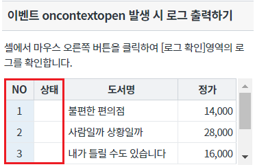
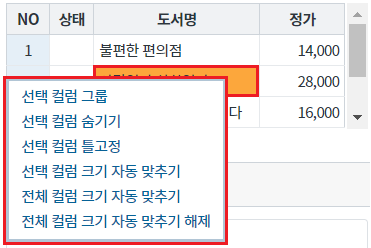
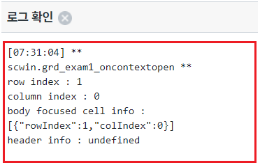
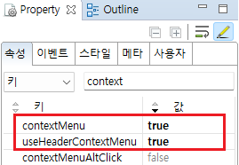
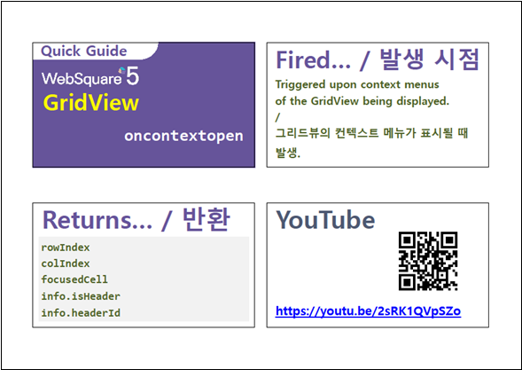

GridView의 이벤트 onContextOpen 예제입니다. onContextOpen 이벤트는 컨텍스트 메뉴가 열릴 때 발생합니다. 지정된 이벤트 핸들러에서 클릭된 셀의 row index, column index, focuced cell info, header info를 확인할 수 있습니다.
이 이벤트는 GridView의 속성 contextMenu="true" 또는 useHeaderContextMenu="true"가 설정되어야 합니다.
이벤트 oncontextopen 발생 시 로그 출력하기
영역 [이벤트 oncontextopen 발생 시 로그 출력하기]의 GridView를 확인합니다.
GridView의 rowNum, rowStatus 기능이 사용 지정되었고,
컨텍스트 메뉴 사용이 지정되었습니다.
[브라우저(Chrome) 실행 예시]

STEP2. 컬럼 '도서명'의 2번째 행의 셀 위에서 마우스 오른쪽 버튼을 클릭합니다.
컬럼 '도서명'의 2번째 행의 셀이 선택되고 컨텍스트 메뉴가 출력됩니다.
[브라우저(Chrome) 실행 예시 - 로그 확인]

oncontextopen 이벤트가 발생되고 이벤트 핸들러가 실행되어 로그가 출력됩니다.
영역 [로그 확인] 또는 브라우저의 개발자 도구의 콘솔(console)탭에 출력된 로그를 확인합니다
[브라우저(Chrome) 실행 예시 - 로그 확인]

[로그 예시]
[07:31:04] ** scwin.grd_exam1_oncontextopen **
row index : 1
column index : 0
body focused cell info : [{"rowIndex":1,"colIndex":0}]
header info : undefined
컨텍스트 메뉴 기능을 사용하기 위해 아래의 속성을 설정합니다.
[필수] contextMenu="true" //바디 영역에 컨텍스트 메뉴 사용
또는
[필수] useHeaderContextMenu="true" //헤더 영역에 컨텍스트 메뉴 사용
그림 1.웹스퀘어5 SP5 스튜디오의 Property View(속성창) 예시

[소스 코드 예시]
<!-- gridView 의 소스 본문 예시 --> <w2:gridView useHeaderContextMenu="true" contextMenu="true" id="grd_exam1" dataList="data:dlt_books_1"> <!-- 중략 --> </w2:gridView>
예제 파일에서는 핸들러로 사용할 함수명을 scwin.grd_exam1_oncontextopen로 정의하였습니다.
[소스 코드 예시]
/** * GridView grd_exam1의 oncontextopen 이벤트 핸들러 */ scwin.grd_exam1_oncontextopen = function (rowIndex, colIndex, arrJsnFocusedCell, jsnHeaderInfo) { console.log(rowIndex, colIndex, arrJsnFocusedCell, jsnHeaderInfo); //header cell에서 열린 경우 rowIndex 값은 -1 입니다. if (rowIndex == -1) { //header cell에서 열린 경우 switch (jsnHeaderInfo.headerId) { case "_headerRowNumber": //컬럼 rowNum console.log("header rowNum"); break; case "_headerRowStatus": //컬럼 rowStatus console.log("header rowStatus"); break; default: break; } } else { //body cell에서 열린 경우 switch (colIndex) { case "rowNum": //컬럼 rowNum console.log("body rowNum"); break; case "rowStatus": //컬럼 rowStatus console.log("body rowStatus"); break; default: break; } } };
contextMenu
useHeaderContextMenu
oncontextopen
[웹스퀘어5 SP5 개발 가이드] GridView
링크 : https://docs1.inswave.com/sp5_user_guide/bc10c1b82c9a2a0b#e1c4658baf7e726f
[웹스퀘어5 SP5 개발 가이드] GridView oncontextopen
링크 : https://docs1.inswave.com/sp5_user_guide/86bdcf48029b958b#cfe7f40843166f59
GridView oncontextopen
링크 : https://youtu.be/2sRK1QVpSZo
